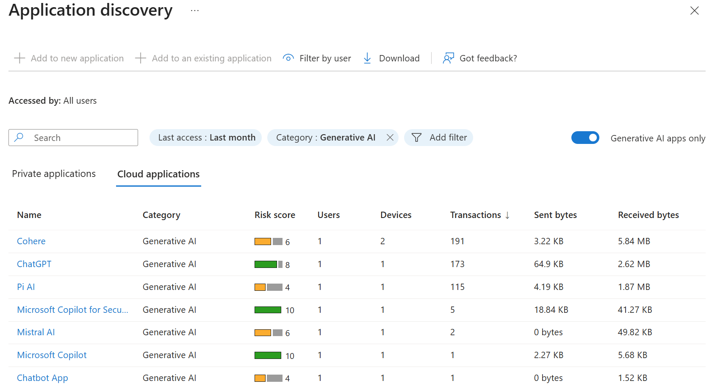
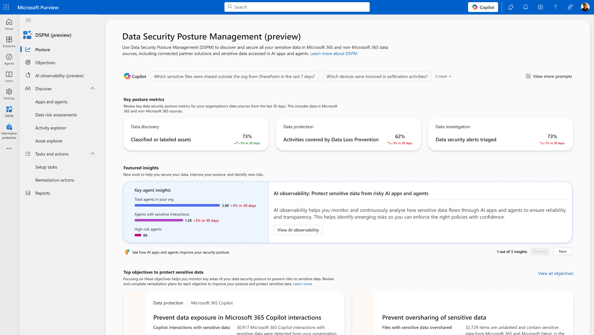
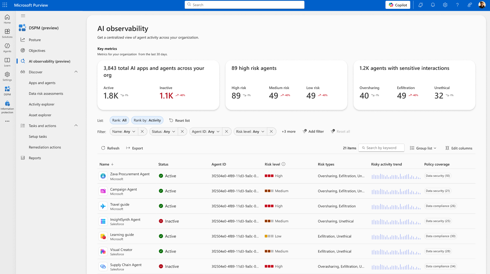
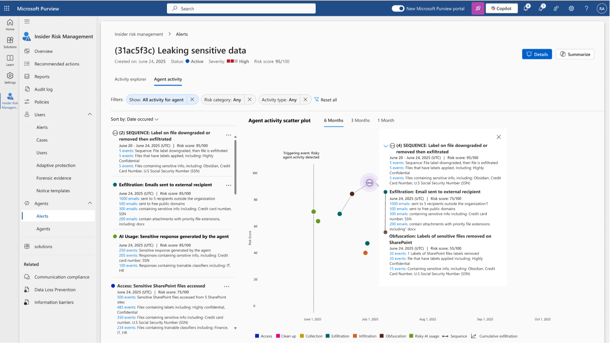
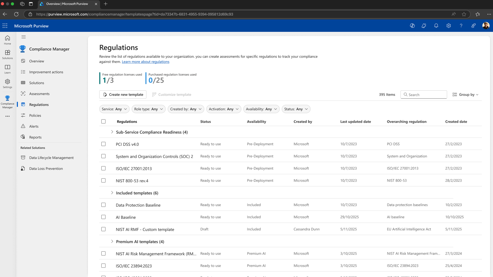

Summary
The Samsung ChatGPT incident is the clearest illustration of why "every prompt is a data transfer": three routine requests for help — debugging code, optimizing a test script, summarizing a meeting — moved proprietary source code, confidential process data, and internal notes outside the company's control, with no malware and no exploit involved. This chapter covers shadow AI (unapproved AI tool and agent usage), how to discover it, and how Microsoft Purview extends data security and compliance controls to both shadow AI usage and governed agents.
Core concepts
Anatomy of the Samsung incident
The incident unfolded in a sequence worth internalizing, because each step maps to a specific control gap:
- Employees sought productivity help — engineers wanted faster ways to debug code, optimize test scripts, and summarize meeting recordings, and turned to ChatGPT via browser using non-enterprise accounts.
- Sensitive data was pasted directly into prompts — proprietary source code, internal meeting notes, and confidential process data, submitted with no malware and no exploit. Just copy-paste.
- Data left Samsung's control — the AI service retained inputs for service improvement; once submitted, the data was stored on external servers and Samsung lost the ability to recall or delete it.
- Intellectual property became externally accessible — no longer confined to internal systems, and at risk of resurfacing in responses to other users. Classified internally as an IP leakage incident.
- Detection was manual and reactive — Samsung identified the pattern only after multiple similar incidents were separately reported internally (code optimization, yield analysis, meeting summarization) — not through automated monitoring.
Every step in that sequence is a gap this chapter's controls close: account governance (non-enterprise accounts should never have reached this workflow), real-time content inspection (rather than after-the-fact pattern recognition), and automated detection (rather than relying on employees to self-report).
What shadow AI actually looks like
Shadow AI is unapproved use of AI tools, agents, or coding assistants — Cursor and GitHub Copilot are named specifically in this workshop's threat model — that introduces uncontrolled data exposure and model-driven code changes outside governance. Concretely:
- Sensitive code, credentials, or business logic get pasted into unmanaged AI systems, creating leakage and compliance blind spots.
- Agentic coding tools can auto-generate or modify application logic without review, increasing the risk of insecure code, hidden dependencies, or supply-chain issues.
- Security teams lose visibility entirely — no logging, no oversight, no ability to trace how AI-generated actions or code paths entered production.
Discovering it starts with four questions: What type of sensitive data is flowing in? Are outputs and interactions protected and well-governed? Who's using GenAI in your organization and how is access secured and governed? What types of GenAI apps are actually being used?
Architecture discussion
Two Microsoft services address this from different angles: Defender for Cloud Apps handles discovery and access control at the app layer; Purview handles content-aware protection and compliance.

Defender for Cloud Apps minimizes shadow AI risk by:
- Discovering shadow AI — identifying generative AI and AI-powered SaaS apps in use.
- Assessing risk — scoring AI apps on security, compliance, and data protection.
- Sanctioning or blocking apps — allowing approved AI tools and blocking risky or unapproved ones.
- Preventing leakage — working with Purview DLP to protect sensitive data in AI prompts.
- Monitoring usage — alerting on new or risky AI app activity.
- Enforcing controls — blocking unsanctioned AI apps on managed devices via Defender for Endpoint.
- Centralizing response — sending AI risk signals into Defender XDR for investigation.

Purview organizes agent data protection into three layers:
- Observe agent risk — agent visibility and risk scoring in DSPM for AI, and Insider Risk Management extended to agents.
- Protect sensitive data — Purview protections applied directly to agent interactions, with native support for Agent ID so protections travel with the agent's identity.
- Maintain compliance — compliance controls extended to agents, not just to human users.

Purview minimizes data exposure risk by monitoring data interactions across 357+ AI platforms, intelligently detecting and blocking sensitive content before it enters AI systems, applying customizable policy frameworks for organizational AI usage requirements, blocking sensitive data exposure at the browser, and extending insider risk management to agents specifically.


Applied to the FinOps architecture from Chapter 2, this closes the loop opened in Chapter 3: Entra Agent ID establishes who the agent is; Purview and Defender for Cloud Apps govern what data that identity can touch and whether its usage is sanctioned at all.
Key security considerations
- Detection has to be real-time, not retrospective. Samsung's own detection was manual pattern-matching across separately reported incidents — the exact failure mode DSPM for AI and Defender for Cloud Apps are built to prevent by inspecting content as it moves, not after the fact.
- Agentic coding tools are a distinct shadow AI risk from chat-based tools. A coding assistant that auto-generates or modifies application logic without review can introduce vulnerabilities into production without any single human ever reviewing the change.
- Data protection has to follow agent identity, not just human identity. Purview's support for Agent ID matters specifically because agent-to-agent and agent-to-system data flows don't have a human in the loop to apply judgment at the point of transfer.
- Compliance frameworks now explicitly cover AI — Compliance Manager's AI-powered regulatory templates reflect that regulators are no longer treating AI systems as out of scope for existing data-protection obligations.
Recommended practices
- Run shadow AI discovery before building any governance program — you cannot govern AI usage you can't see. Start with the four discovery questions in this chapter.
- Apply DLP-style content inspection to AI prompts, not just to file uploads and email — a pasted code block in a chat prompt is a data transfer with the same risk profile as an email attachment.
- Extend insider risk management to agents specifically, not only to the humans who deploy them — an agent's behavior can itself be the anomaly.
- Treat Agent ID as the anchor for data-protection policy: apply Purview protections keyed to agent identity so policy travels with the agent across every system it touches.
Technologies referenced
- Microsoft Defender for Cloud Apps — shadow AI discovery, risk scoring, sanctioning/blocking, and enforcement via Defender for Endpoint.
- Microsoft Purview (DSPM for AI, DLP, Insider Risk Management, Compliance Manager) — content-aware data protection and compliance extended to agents.
- Microsoft Defender XDR — centralized investigation and response for AI risk signals.
- Microsoft Entra Agent ID — the identity anchor Purview protections attach to (from Chapter 3).
Key takeaways
- Every prompt is a potential data transfer — the Samsung incident required no exploit, just unmanaged copy-paste into a non-enterprise AI tool.
- Shadow AI discovery has to come before governance; you can't secure what you can't see.
- Data protection has to be anchored to agent identity (Agent ID), not just applied at the human layer, because agents create data flows with no human in the loop.